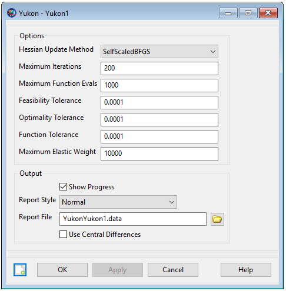

Yukon — The Sequential Quadratic Programming (SQP) optimizer, Yukon
The Yukon optimizer is a SQP-based Non-Linear Programming solver that uses an active-set line search algorithm method and a modified BFGS update to approximate the Hessian matrix.
Yukon performs nonlinear constrained optimization and supports both linear and nonlinear constraints. To use this solver, you must configure the solver options including convergence criteria, maximum iterations, and gradient computation method. In the mission sequence, you implement an optimizer such as Yukon by using an Optimize/EndOptimize sequence. Within this sequence, you define optimization variables by using the Vary command, and define cost and constraints by using the Minimize and NonlinearConstraint commands respectively.
This resource cannot be modified in the Mission Sequence.
See Also: FminconOptimizer, VF13ad, Optimize,Vary, NonlinearConstraint, Minimize
| Field | Description | ||||||||||||
|---|---|---|---|---|---|---|---|---|---|---|---|---|---|
| FeasibilityTolerance | The tolerance on the maximum non-dimensional constraint violation that must be satisfied for convergence.
| ||||||||||||
| FunctionTolerance | The tolerance on the change in the cost function value to trigger convergence. If the change in the cost function from one iteration to the next is less than FunctionTolerance, and the maximum (non-dimensional) constraint violation is less than OptimalityTolerance, then the algorithm terminates.
| ||||||||||||
| HessianUpdateMethod | The method used to approximate the Hessian of the Lagrangian. These methods are based on the BFGS but are more robust to possible numerical issues that can occur using BFGS updates with finite precision arithmetic.
| ||||||||||||
| MaximumElasticWeight | The maximum elastic weight allowed when attempting to minimize constraint infeasiblities if the problem apperas to be infeasible. When possible infeasibility is detected, the elastic weight is initialized to zero, and increases by a factor of 10 for every failed iterations, until the MaximumElasticWeight setting is reached and the algorithm terminates.
| ||||||||||||
| MaximumFunctionEvals | Number of passes through the control sequence before termination.
| ||||||||||||
| MaximumIterations | The maximum number of optimizer iterations allowed before termination.
| ||||||||||||
| OptimalityTolerance | The tolerance on the change in the gradient of the Lagrangian to trigger convergence. If the gradient of the Lagrangian is less than FeasibilityTolerance and the maximum (non-dimensional) constraint violation is less than Optimality Tolerance, then the algorithm terminates.
| ||||||||||||
| ReportFile | Contains the path and file name of the report file containing iteration adn convergence information.
| ||||||||||||
| ReportStyle | Determines the amount and type of data written to the message window and to the report specified by field ReportFile for each iteration of the solver (When ShowProgress is true). Currently, the Normal, Debug, and Concise options contain the same information: the values for the control variables, the constraints, and the objective function. In addition to this information, the Verbose option also contains values of the optimizer-scaled control variables and the constraint Jacobian. The constraint Jacobian values are useful when scaling optimization problems. See the Remarks section for more information.
| ||||||||||||
| ShowProgress | Determines whether data pertaining to iterations of the solver is both displayed in the message window and written to the report specified by the ReportFile field. When ShowProgress is true, the amount of information contained in the message window and written in the report is controlled by the ReportStyle field.
| ||||||||||||
| UseCentralDifferences | Allows you to choose whether or not to use central differencing for numerically determining the derivative. For the default, 'false' value of this field, forward differencing is used to calculate the derivative.
|
The Yukon dialog box allows you to specify properties of a Yukon such as as maximum iterations, cost function tolerance, feasibility tolerance, choice of reporting options, and choice of whether or not to use the central difference derivative method.
To create a Yukon resource, navigate to the Resources tree, expand the Solvers folder, highlight and then right-click on the Optimizers sub-folder, point to Add and then select Yukon. This will create a new Yukon resource, Yukon1. Double-click on Yukon1 to bring up the Yukon dialog box shown below.
|  |
Create a Yukon resource named Yukon1.
Create Yukon Yukon1
GMAT Yukon1.ShowProgress = true;
GMAT Yukon1.ReportStyle = Normal;
GMAT Yukon1.ReportFile = 'YukonYukon1.data';
GMAT Yukon1.MaximumIterations = 200;
GMAT Yukon1.UseCentralDifferences = false;
GMAT Yukon1.FeasibilityTolerance = 0.0001;
GMAT Yukon1.HessianUpdateMethod = SelfScaledBFGS;
GMAT Yukon1.MaximumFunctionEvals = 1000;
GMAT Yukon1.OptimalityTolerance = 0.0001;
GMAT Yukon1.FunctionTolerance = 0.0001;
GMAT Yukon1.MaximumElasticWeight = 10000; Below is a simple optimization example with a nonlinear constraint configured to use the Yukon optimizer.
%------ Create and Setup the Optimizer
Create Yukon NLPSolver;
%------ Arrays, Variables, Strings
Create Variable X1 X2 J G;
%------ Mission Sequence
BeginMissionSequence;
Optimize NLPSolver {SolveMode = Solve, ExitMode = DiscardAndContinue};
% Vary the independent variables
Vary 'Vary X1' NLPSolver(X1 = 0, {Perturbation = 0.0000001});
Vary 'Vary X2' NLPSolver(X2 = 0, {Perturbation = 0.0000001});
% The cost function and Minimize command
GMAT 'Compute Cost (J)' J = ( X1 - 2 )^2 + ( X2 - 2 )^2;
Minimize 'Minimize Cost (J)' NLPSolver(J);
% Calculate constraint and use NonLinearConstraint command
GMAT 'Compute Constraint (G)' G = X2 + X1;
NonlinearConstraint 'G = 8' NLPSolver(G =8);
EndOptimize; % For optimizer NLPSolver